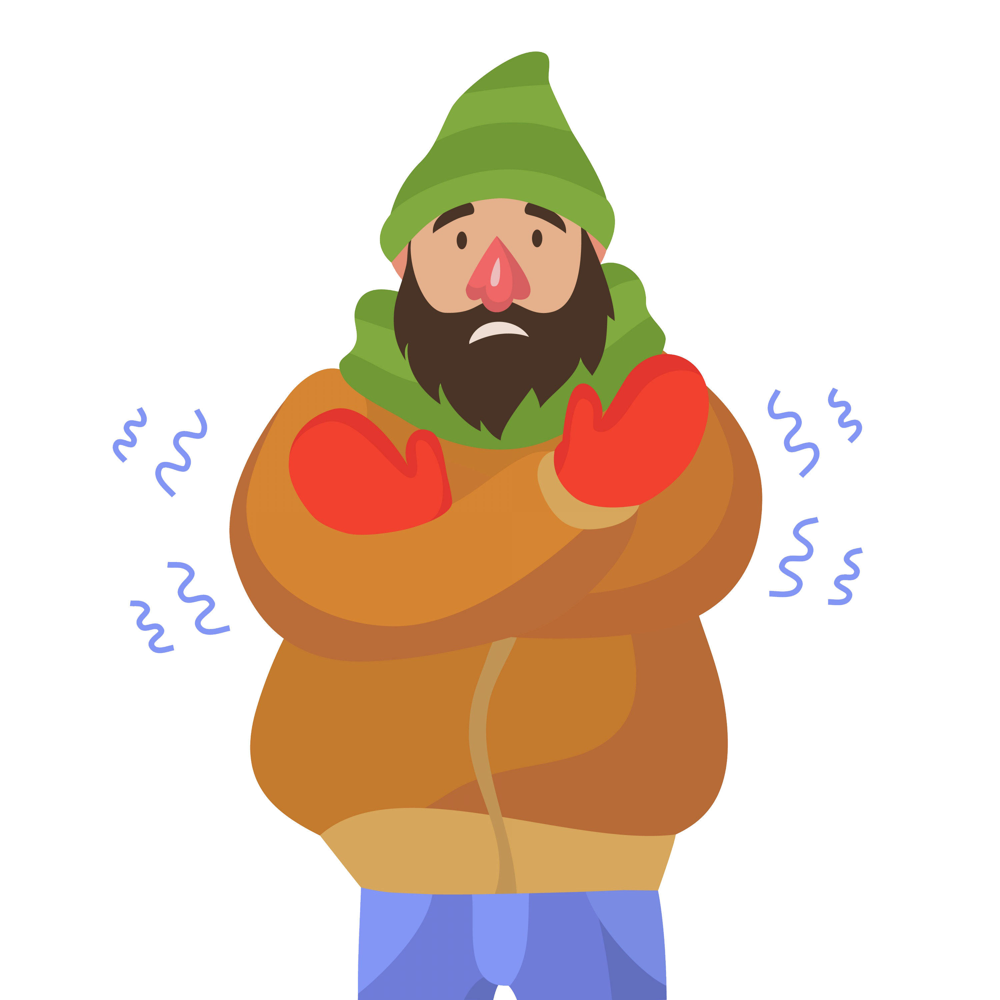

Обморожение, его признаки и степени повреждения
Обморожение — повреждение тканей организма под воздействием низких температур. Нередко сопровождается общим переохлаждением организма и особенно часто затрагивает выступающие части тела, такие как ушные раковины, нос, недостаточно защищённые конечности, прежде всего пальцы рук и ног.
- Признаки обморожения:
- Ощущение покалывания или пощипывания;
- Потеря чувствительности;
- Побеление кожи;
- Волдыри, потемнение и отмирание.
- Степени обморожения:
- I степень. Поражённый участок кожи бледный, имеет мраморный окрас. После согревания кожа покрасневшая, в некоторых случаях имеет багрово-красный оттенок, развивается отёк. Омертвения кожи не возникает;
- II степень. Образование в первые дни после травмы пузырей, наполненных прозрачным содержимым;
- III степень. В начальном периоде образуются пузыри наполненные кровянистым содержимым, дно их сине-багровое, нечувствительное к раздражениям. Происходит гибель всех элементов кожи с развитием в исходе обморожения грануляций и рубцов;
- IV степень. Омертвевают все слои мягких тканей, нередко поражаются кости и суставы.
Повреждённый участок конечности резко синюшный, иногда с мраморной расцветкой. Отёк развивается сразу после согревания и быстро увеличивается. Температура кожи значительно ниже, чем на окружающих участках тканей. Утрата чувствительности.

Первая помощь при обморожении
- Необходимо переместить пострадавшего в теплое помещение;
- Осторожно снять верхнюю одежду и обувь с пораженной области;
- Уложить больного и у укрыть теплым одеялом;
- Дать теплое питье, горячий чай, молоко, морс;
- На пораженные участки наложить стерильную повязку;
- Если чувствительность пораженных участков не восстановилась необходимо немедленно вызвать врача.
Необходимость доставить пострадавшего к врачу
- Если 2-3 степень обморожения;
- Если обморожение у ребенка или пожилого человека;
- Если обморожение больше ладони пострадавшего.
Меры предосторожности
- Запрещено растирать пораженные участки, втирать мази, масла, спирт. При обморожении II-IV степеней это может способствовать развитию инфекции;
- Противопоказано употреблять алкогольные напитки;
- Нельзя прикладывать к пораженным участкам горячие предметы, например, очень горячую грелку, обогревать у батареи. При сильном обморожении кожа не чувствительна и такое обогревание может вызвать ожог.